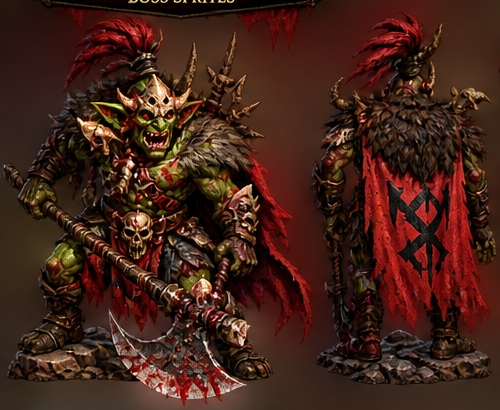

Heavy Cleave
A brutal axe strike dealing heavy close-range damage.

The ruler of Westwood's goblin clans waits beyond the gates of the Chieftain Dungeon.
Deep beneath Westwood, the Goblin Chieftain rules from a fortress of black stone, fire and bone. Smaller goblin warbands answer to his banners, bringing stolen supplies and weapons back to his dungeon.
Adventurers who push deep enough into goblin territory will eventually reach the Chieftain's Den. Defeating him will be one of Valvondor's first major boss challenges.
A brutal axe strike dealing heavy close-range damage.
A sweeping spin attack that punishes players who stay too close.
Summons goblin reinforcements into the arena during the fight.
A ranged attack used against players trying to keep their distance.
Drops and stats are still in development and may change before release.
The dungeon and boss fight are currently in development.